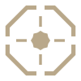
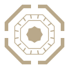
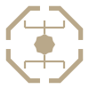
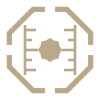

ما الذي يعمل الآن؟
الخدمات والحاويات والمنافذ والعمليات وحالة الجهاز، مقروءةً من الواقع لا من تقريرٍ قديم.
الحالة الحيّةمنصّة شخصية · لجهاز مطوّر واحد
ورشة طحلة تجمع أدوات الجهاز وقواعد العمل وسطوح المتابعة في نظامٍ محليّ واحد؛ كي لا تضيع الحقيقة بين طرفيّةٍ مفتوحة، ولوحةٍ بعيدة، وذاكرةٍ لا تُقاس.
لماذا «طُحلة»؟
الطُّحلة لون الرماد: لا ينتمي إلى هذا الطرف ولا ذاك. والورشة كذلك؛ تخدم أكثر من نطاق عمل من غير أن تصبح جزءًا من أيٍّ منها. ما يخصّ جانبًا يُعزل في نطاقه، وما ينفع الجميع يبقى في القلب.
الآلة أمامك هي الأصل.
وكلّ ما عداها نسخةٌ منها.
الثلاثة التي بدأت منها
بدل ثلاثين استدعاءً للحالة، وعشرات الألسنة المفتوحة، ومعلومةٍ تتغير قبل أن تصل إليها.
الخدمات والحاويات والمنافذ والعمليات وحالة الجهاز، مقروءةً من الواقع لا من تقريرٍ قديم.
الحالة الحيّةقاعدةٌ واحدة مكتوبة مرة، مفهرسة وقابلة للبحث، تصل إلى كل أداة تعمل على الجهاز.
قواعدٌ نافذةسطوحٌ هادئة تحمل هويةً واحدة، وتحوّل ما في الطرفية إلى قرارٍ تستطيع رؤيته ولمسه.
سطوحٌ مرئيّةالبنية
وحداتٌ مستقلة في إصدارها واختبارها، تجتمع داخل مساحة عمل واحدة. الدليل ليس قائمة مشروعات؛ بل حدود مسؤولية تمنع الأدوات من ابتلاع البرامج، وتمنع البرامج من إعادة اختراع الأدوات.
القدرات، الهوية، البيان، القواعد، والسجل الدائم.
الأبواب التي تقرأ الجهاز وتعرضه وتدير ما عليه.
ما يمسك الأثر، ويحفظه، ويهيّئ مساحة العمل.
مساحة لإثبات الفكرة قبل أن تستحق بناء نظامٍ دائم.
علامات الوحدات
لكلّ وحدة علامةٌ تميّزها داخل الورشة. تُعرض العلامات ضمن طبقاتها الأربع من غير نشر أسماء المشروعات أو تفاصيلها الخاصة.





الختم الناطق
ما تقوله الورشة عن طريقتها، مأخوذٌ من سجلّ صوتها نفسه لا من نسخةٍ كُتبت لهذه الصفحة.
01البساطة قوّة.
شعار ورشة طحلة · يكتبه صاحب الورشة
02اترك كلّ مشروعٍ أفضلَ ممّا وجدتَه.
شعار ورشة طحلة · يكتبه صاحب الورشة
ورشةٌ شخصية،
لكنّ فكرتها قابلةٌ للمشاركة.